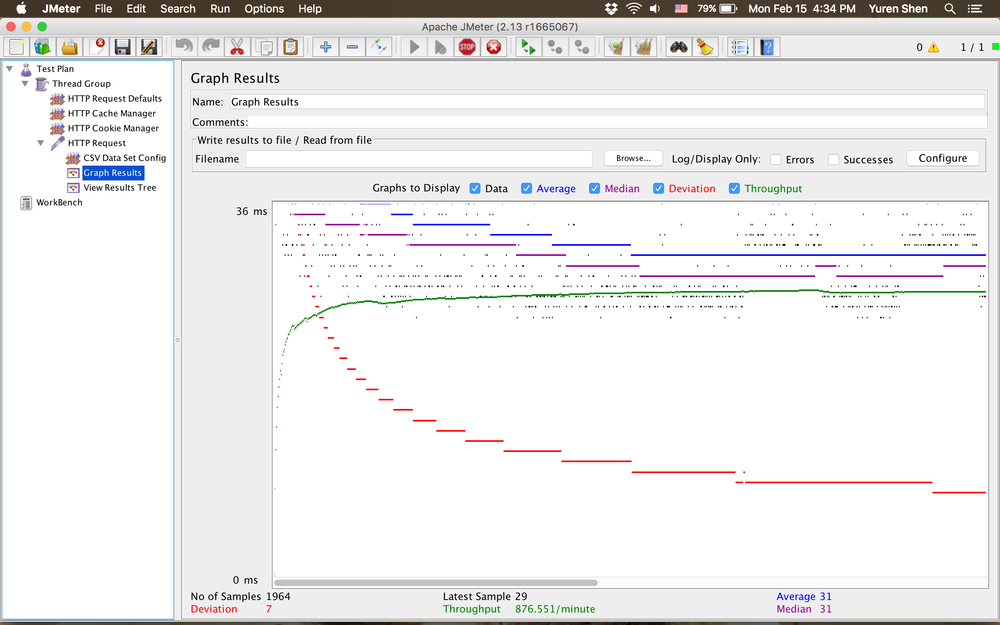
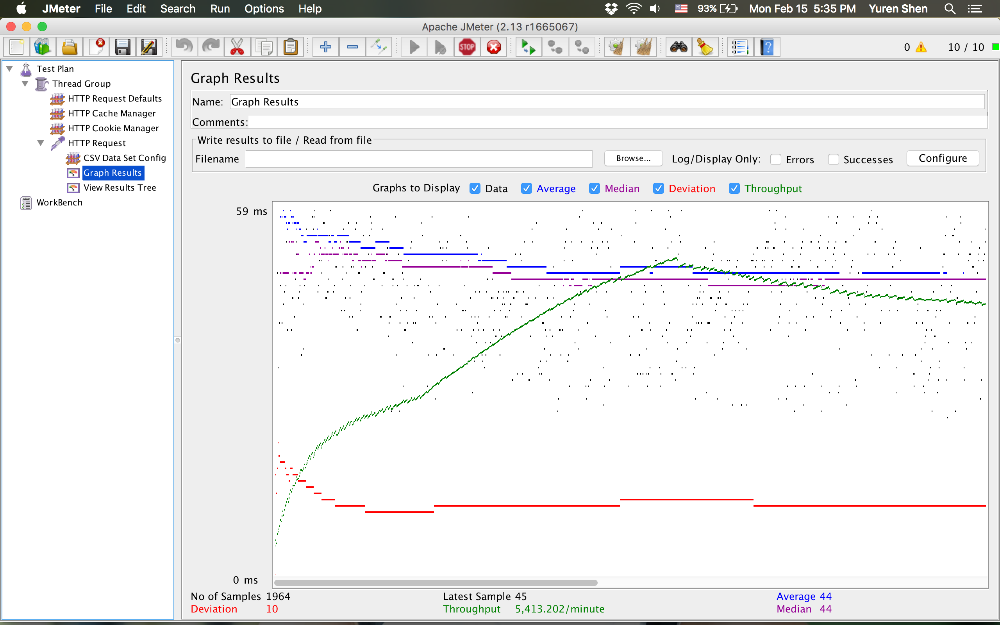
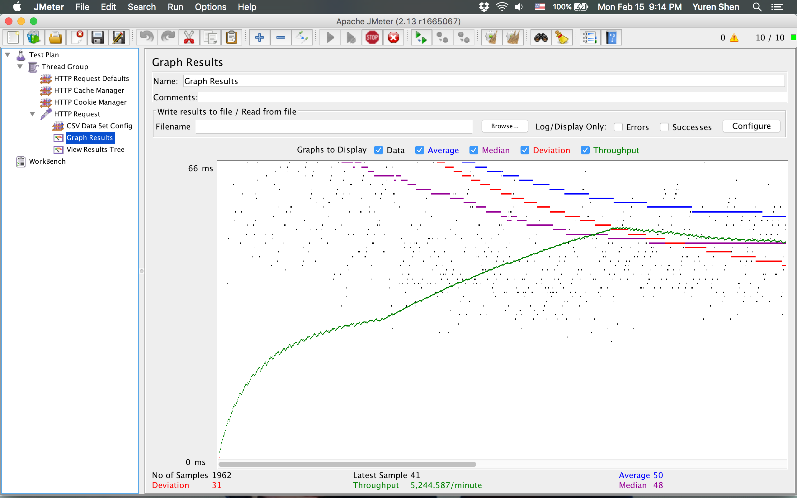

| Case | Graph Results Screenshot | Average Query Time Value(ms) | More |
| Case 1: HTTP/1 thread |  | average query time = 144 seconds / 1964 queries = 0.07331975560081466 seconds = 73 ms | Our Jmeter stopped at 1964 queries |
| Case 2: HTTP/10 threads |  | 21 seconds / 1964 queries = 0.010692464358452138 sec = 10.69 ms | Our Jmeter stopped at 1964 queries |
| Case 3: HTTPS/10 threads |  | 22 secs / 1962 = 0.0010198878123406426 sec = 1.02 ms | Our Jmeter stopped at 1964 queries |
| Case 4: HTTP/10 threads/No prepared statements | 21 seconds / 1964 queries = 0.010692464358452138 sec = 10.69 ms | We did not use the prepared statement in the search, so here the result is the same as the second one |